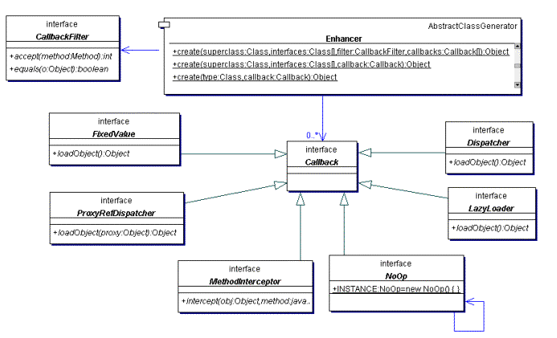
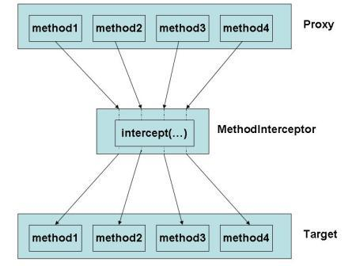

什么是代理
代理是一种设计模式。当我们想要添加或修改现有类的某些功能时，我们创建并使用代理对象。通常，代理对象具有与原始代理对象相同的方法，并且在 Java 代理类中通常扩展原始类。代理的主要目的是控制对目标对象的访问，而不是增强目标对象的功能。
这样，代理类可以通过方便的方式实现许多功能：
- 方法开始和结束时日志
- 访问控制，过滤恶意请求
- 本地执行远程服务
- 缓存请求结果
- 对参数执行额外检查
- 模拟原始类的行为
- 实现对昂贵资源的懒加载
- 智能引用，可在没有客户端使用某个重量级对象时立即销毁该对象
- etc…
在实际应用中，代理类不直接实现功能。遵循单一责任原则，代理类仅执行代理，并且实际行为在处理程序中实现。
与静态代理相比，动态代理需要在运行时进行 Java 反射的字节码生成。使用动态方法，无需创建代理类，这可以带来更多便利。
静态代理类
动态代理类
动态代理类（下面简称为代理类）是一个在运行时实现指定接口列表的类，这样就可以通过其中一个接口实例类上的方法调用编码并通过统一接口分配给另一个对象。因此，动态代理类可用于为接口列表创建类型安全的代理对象，而无需预生成代理类，例如使用编译时工具。动态代理类的实例上的方法调用被分派到实例的调用处理程序中的单个方法，它们使用 java.lang.reflect.Method 对象进行编码，该对象标识被调用的方法以及包含参数的 Object 类型数组。
动态代理类对于需要在呈现接口 API 的对象上提供类型安全反射调度调用的应用程序或库非常有用。应用程序可以使用动态代理类来创建实现多个任意事件侦听器接口的对象，扩展 java.util.EventListener 的接口，以统一的方式处理不同类型的各种事件，例如将所有此类事件记录到文件中。
动态代理类 API
动态代理类（下面简称为代理类）是一个实现在运行时创建指定的接口列表的类的类。
代理接口就是由代理类实现的接口。
代理实例是代理类的实例。
创建代理类
使用类 java.lang.reflect.Proxy 的静态方法创建代理类及其实例。
在给定类加载器和接口数组的情况下，Proxy.getProxyClass 方法返回代理类的 java.lang.Class 对象。代理类将在指定的类加载器中定义，并将实现所有提供的接口。如果已经在类加载器中定义了相同的接口排列的代理类，将返回现有的代理类；否则，将动态生成这些接口的代理类，并在类加载器中定义。
可以传递给 Proxy.getProxyClass 的参数有几个限制：
interfaces数组中的所有Class对象都必须表示接口，而不是类或基本类型。interfaces数组中没有两个元素可以引用相同的Class对象。- 所有接口类型必须通过指定的类加载器按名称可见。换句话说，对于类加载器 cl 和每个接口 i，以下表达式必须为 true：
1 | Class.forName(i.getName(), false, cl) == i |
- 所有非公共接口必须位于同一个包中；否则，代理类无法实现所有接口，无论它在哪个包中定义。
- 对于具有相同签名的指定接口的任何成员方法集：
- 如果任何方法的返回类型是基本类型或 void，则所有方法必须具有相同的返回类型。
- 否则，其中一个方法必须具有可分配给其余方法的所有返回类型的返回类型。
- 生成的代理类不得超过虚拟机对类强加的任何限制。例如，VM 可以将类可以实现的接口数量限制为 65535；在这种情况下，
interfaces数组的大小不得超过 65535。
请注意，指定代理接口的顺序很重要：对具有相同接口组合但顺序不同的代理类的两个请求将导致两个不同的代理类。代理类通过其代理接口的顺序来区分，以便在两个或更多代理接口共享具有相同名称和参数签名的方法的情况下提供确定性方法调用编码;
因此，每次使用相同的类加载器和接口列表调用 Proxy.getProxyClass 时，不需要生成新的代理类，动态代理类API 的实现应保留生成的代理类的缓存，由其相应的加载器和接口列表键入。实现时应注意不要引用类加载器，接口和代理类，以防止类加载器及其所有类在适当时被垃圾收集。
代理类属性
代理类具有以下属性：
- 代理类是公共的，最终的，而不是抽象的。
- 未指定代理类的非限定名称。但是，以字符串
“$Proxy”开头的类名空间是为代理类保留的。 - 代理类扩展了
java.lang.reflect.Proxy。 - 代理类以相同的顺序实现其创建时指定的接口。
- 如果代理类实现非公共接口，则它将在与该接口相同的包中定义。否则，代理类的包也是指定的。请注意，程序包密封不会阻止在运行时在特定程序包中成功定义代理类，也不会在同一个类加载器中定义类，也不会在特定程序集中使用相同的程序包。
- 由于代理类实现了在创建时指定的所有接口，因此在其 Class 对象上调用 getInterfaces 将返回一个包含相同接口列表的数组（按照创建时指定的顺序）。在其 Class 对象上调用 getMethods 将返回包含这些接口中所有方法的 Method 对象数组，并且调用 getMethod 将按预期在代理接口中查找方法。
- 如果
Proxy.isProxyClass方法传递了一个代理类 - （由Proxy.getProxyClass返回的类或Proxy.newProxyInstance返回的对象的类），则返回 true，否则返回 false。 - 代理类的
java.security.ProtectionDomain与引导类加载器加载的系统类相同，例如 java.lang.Object，因为代理类的代码是由受信任的系统代码生成的。通常会授予此保护域java.security.AllPermission。
创建代理实例
每个代理类都有一个公共构造函数，它接受一个参数，即 InvocationHandler 接口的实现。
每个代理实例都有一个关联的 InvocationHandler 对象，该对象就是通过构造方法传递进来的。不必非要使用反射 API 来访问公共构造函数，也可以通过调用 Proxy.newProxyInstance 方法创建代理实例。 Proxy.newProxyInstance 因与 Proxy.getProxyClass 相同的原因抛出 IllegalArgumentException（比如接口数量不能超过 65535）。
代理实例属性
代理实例有以下属性：
- 给定代理实例 proxy 和其代理类 Foo 实现的接口之一，以下表达式将返回 true：
1 | proxy instanceof Foo |
并且以下转换操作将成功（而不是抛出 ClassCastException）：
1 | (Foo) proxy |
-
静态
Proxy.getInvocationHandler方法传递代理实例并返回与之关联的InvocationHandler。如果传递给Proxy.getInvocationHandler的对象不是代理实例，则将抛出IllegalArgumentException。 -
代理实例上的接口方法调用将被编码并调度到
InvocationHandler的调用方法，如下所述。代理实例本身将作为
invoke的第一个参数传递，它是 Object 类型。传递给
invoke的第二个参数是java.lang.reflect.Method实例，该实例对应于在代理实例上调用的接口方法。Method对象的声明类将是声明方法的接口，它可以是代理接口继承方法的代理接口的超接口。传递给
invoke的第三个参数是一个对象数组，其中包含在代理实例上的方法调用中传递的参数的值。原始类型的参数包装在适当的原始包装类的实例中，例如java.lang.Integer或java.lang.Boolean。invoke方法的实现可以自由修改此数组的内容。invoke方法返回的值将成为代理实例上方法调用的返回值。如果接口方法的声明返回值是基本类型，则 invoke 返回的值必须是相应原始包装类的实例；否则，它必须是可分配给声明的返回类型的类型。如果invoke返回的值为null，并且接口方法的返回类型为原始类型，则代理实例上的方法调用将抛出NullPointerException。如果invoke返回的值与上面描述的方法声明的返回类型不兼容，则代理实例将抛出ClassCastException。如果
invoke方法抛出异常，它也将被代理实例上的方法调用抛出。异常的类型必须可分配给在接口方法的签名中声明的任何异常类型，或者分配给未经检查的异常类型java.lang.RuntimeException或java.lang.Error。如果通过调用抛出已检查的异常，该异常不能分配给接口方法的throws子句中声明的任何异常类型，在代理实例上的方法调用将抛出UndeclaredThrowableException。将使用invoke方法抛出的异常构造UndeclaredThrowableException。 -
在代理实例上的
java.lang.Object中声明的hashCode，equals或toString方法的调用将被编码并调度到InvocationHandler的invoke方法，其方式与编码和分派接口方法调用的方式相同，如上所述。 传递给invoke的Method对象的声明类将是java.lang.Object。 从java.lang.Object继承的代理实例的其他公共方法不会被代理类覆盖，因此这些方法的调用就像它们对java.lang.Object的实例一样。
序列化
由于 java.lang.reflect.Proxy 实现了 java.io.Serializable，因此可以序列化代理实例。
Examples
下面是一个简单的示例，它在实现任意接口列表的对象上的方法调用之前和之后打印出一条消息：
1 | public interface Foo { |
要为 Foo 接口的实现构造 DebugProxy 并调用其方法之一：
1 | Foo foo = (Foo) DebugProxy.newInstance(new FooImpl()); |
下面是一个实用程序调用处理程序类的示例，它为从 java.lang.Object 继承的方法提供默认代理行为，并根据被调用方法的接口实现对不同对象的某些代理方法调用的委派：
1 | import java.lang.reflect.*; |
Delegator 的子类可以覆盖 invokeNotDelegated 以实现代理方法调用的行为，而不是直接委托给其他对象，它们可以覆盖 proxyHashCode，proxyEquals 和 proxyToString，以覆盖代理从 java.lang.Object 继承的方法的默认行为。
要为 Foo 接口的实现构造 Delegator：
1 | Class[] proxyInterfaces = new Class[] { Foo.class }; |
请注意，上面给出的 Delegator 类的实现旨在说明而不是优化；例如，不是缓存和比较 hashCode，equals 和 toString 方法的 Method 对象，而是可以通过它们的字符串名称匹配它们，因为这些方法名称都没有在 java.lang.Object 中重载。
由于
InvocationHandler是一个函数接口，因此可以使用lambda表达式内联定义处理程序。
CGLIB 代理
JDK 动态代理通常用于动态创建代理。JDK 动态代理很容易使用，但 JDK 动态代理方法要求目标对象实现一个或多个接口。对象不一定实现接口，对象集合不一定共享相同的接口。面对这样的需求，JDK 动态代理无法提供答案。
CGLIB 是一个功能强大的高性能代码生成库。它在基于代理的面向方面编程（AOP）框架（如 Spring AOP 和 dynaop）中广泛使用，以提供方法拦截。Hibernate 使用 CGLIB 为持久化类生成代理。EasyMock 和 jMock 是使用模拟对象测试 Java 代码的库。它们都使用 CGLIB 库为没有接口的类创建模拟对象。
在幕后，CGLIB 库使用 ASM，一个小但快速的字节码操作框架，来转换现有的字节码并生成新的类。除了 CGLIB 库之外，脚本语言（如 Groovy 和 BeanShell）也使用 ASM 生成 Java 字节码。 ASM 使用类似 SAX 解析器的机制来实现高性能。不鼓励直接使用 ASM，因为它需要熟悉 JVM，包括类文件格式和指令集。

请注意，某些框架（如
Spring AOP和Hibernate）通常同时使用CGLIB库和JDK 动态代理来满足其需求。Hibernate使用 JDK 动态代理为WebShere应用程序服务器实现事务管理器适配器；默认情况下，Spring AOP使用 JDK 动态代理来代理接口，除非您强制使用 CGLIB 代理。
CGLIB 代理 API
CGLIB 库代码库很小，但由于缺少文档，很难学习。CGLIB 库的版本组织如下：
-
net.sf.cglib.core低级字节码操作类；他们中的大多数都与
ASM有关。 -
net.sf.cglib.transform运行时或构建时的类文件转换的类
-
net.sf.cglib.proxy代理创建和方法拦截的类
-
net.sf.cglib.reflect用于更快反射的类和
C#样式的委托 -
net.sf.cglib.util集合排序工具类
-
net.sf.cglib.beansJavaBean相关工具类
要动态创建代理，大多数情况下，您只需要使用代理包中的一些 API。
如前一节所述，CGLIB 库是 ASM 之上的高级层。它对代理不实现接口的类非常有用。本质上，它动态生成一个子类来覆盖代理类的非 final 方法，并连接回调用户定义的拦截器的钩子。它比 JDK 动态代理方法更快。

通常用于代理具体类的 CGLIB 库 API 如上图所示。net.sf.cglib.proxy.Callback 接口是一个标记接口。 net.sf.cglib.proxy.Enhancer 类使用的所有回调接口都扩展了此接口。
net.sf.cglib.proxy.MethodInterceptor 是最常用的回调类型。它在 AOP 术语中启用 ”around advice“（围绕建议） - 也就是说，您可以在调用 “super” 方法之前和之后调用自定义代码。此外，您可以在调用 super 方法之前修改参数，或者根本不调用它：
1 | public Object intercept(Object object, java.lang.reflect.Method method, |
当 net.sf.cglib.proxy.MethodInterceptor 是代理的所有方法的回调时，代理上的方法调用将在调用原始对象上的方法之前路由到此方法。如下图所示。第一个参数是代理对象。第二个和第三个参数分别是截获的方法和方法参数。可以使用 java.lang.reflect.Method 对象或使用 net.sf.cglib.proxy.MethodProxy 对象通过常规反射调用原始方法。net.sf.cglib.proxy.MethodProxy 通常是首选，因为它更快。在此方法中，可以在调用原始方法之前或之后注入自定义代码。

net.sf.cglib.proxy.MethodInterceptor 满足任何拦截需求，但在某些情况下可能有点过分。为了简化和性能，提供了开箱即用的其他专用回调类型。举些例子，
-
net.sf.cglib.proxy.FixedValue出于性能原因，强制特定方法返回固定值很有用。
-
net.sf.cglib.proxy.NoOp它将方法调用直接委托给超类中的默认实现。
-
net.sf.cglib.proxy.LazyLoader当真实对象需要延迟加载时，它很有用。加载实际对象后，它将用于代理实例的每个未来方法调用。
-
net.sf.cglib.proxy.Dispatcher它与
net.sf.cglib.proxy.LazyLoader具有相同的签名，但在调用代理方法时始终会调用loadObject方法。 -
net.sf.cglib.proxy.ProxyRefDispatcher它与
Dispatcher相同，但它允许将代理对象作为loadObject方法的参数传入。
回调通常用于代理类中的所有方法，如上图所示，但您可以使用 net.sf.cglib.proxy.CallbackFilter 有选择地对方法应用回调。JDK 动态代理中没有这种细粒度控制功能，其中 java.lang.reflect.InvocationHandler 的 invoke 方法适用于代理对象的所有方法。
除了代理类之外，CGLIB 还可以通过提供 java.lang.reflect.Proxy 的替代代码 net.sf.cglib.proxy.Proxy 来代理接口，以支持 JDK 1.3 之前的 Java 代理。由于很少使用此替换代理功能，因此此处不涉及相关代理 API。
代理包还提供对 net.sf.cglib.proxy.Mixin 的支持。基本上，它允许将多个对象组合成一个更大的对象。代理上的方法调用委托给底层对象。
让我们看看如何使用 CGLIB 代理 API 创建代理。
创建代理类
CGLIB 代理的核心是 net.sf.cglib.proxy.Enhancer 类。要创建 CGLIB 代理，至少需要一个类。让我们先使用内置的 NoOp 回调：
1 | /** |
返回值是目标类实例的代理。在此示例中，为 net.sf.cglib.proxy.Enhancer 类配置了单个 net.sf.cglib.proxy.Callback。可以看出，创建一个简单的代理是相当简单的。而不是创建 net.sf.cglib.proxy.Enhancer 的新实例，您可以简单地使用 net.sf.cglib.proxy.Enhancer 类中的静态帮助器方法来创建代理。但是最好使用上例中显示的方法，因为它允许您配置 net.sf.cglib.proxy.Enhancer 实例以精确控制生成的代理。
请注意，目标类作为生成的代理的超类传入。与 JDK 动态代理不同，您无法在代理创建期间传递目标对象。目标对象必须由 CGLIB 库创建。在此示例中，默认的零参数构造函数用于创建目标实例。如果您希望 CGLIB 使用一些参数创建实例，net.sf.cglib.proxy.Enhancer.create(Class[]，Object[]) 应当使用该方法替代 net.sf.cglib.proxy.Enhancer.create()。第一个参数指定参数类型和第二个指定参数值。原始类型在参数中应该使用包装类型。
使用 MethodInterceptor
要使代理更有用，可以使用自定义 net.sf.cglib.proxy.MethodInterceptor 替换 net.sf.cglib.proxy.NoOp 回调。代理上的所有方法调用都被调度到 net.sf.cglib.proxy.MethodInterceptor 的单个 intercept 方法。然后，intercept 方法将调用委托给底层对象。
假设您要对目标对象的所有方法调用应用授权检查。如果授权失败，将抛出运行时异常 AuthorizationException。 Authorization.java 接口如下所示：
1 | import java.lang.reflect.Method; |
net.sf.cglib.proxy.MethodInterceptor 的实现如下：
1 | import java.lang.reflect.Method; |
在 intercept 方法中，首先检查授权。如果授权通过，则 intercept 方法将调用目标对象上的原始方法。出于性能原因，使用 CGLIB net.sf.cglib.proxy.MethodProxy 对象而不是使用 java.lang.reflect.Method 对象进行常规反射来调用原始方法。
使用 CallbackFilter
net.sf.cglib.proxy.CallbackFilter 允许您在方法级别设置回调。假设您有一个 PersistenceServiceImpl 类，它有两个方法：save 和 load。 save 方法需要授权检查，但 load 方法不需要。
1 | import com.lizjason.cglibproxy.PersistenceService; |
请注意，PersistenceServiceImpl 类实现了 PersistenceService 接口，但这不是使用 CGLIB 生成代理所必需的。 PersistenceServiceImpl 的 net.sf.cglib.proxy.CallbackFilter 实现如下：
1 | import java.lang.reflect.Method; |
accept 方法将代理方法映射到回调。返回值是特定方法的回调数组中的索引。以下是 PersistenceServiceImpl 类的代理创建实现：
1 | ... |
在此示例中，AuthorizationInterceptor 实例应用于 save 方法，NoOp.INSTANCE 应用于 load 方法。可选的，您可以通过 net.sf.cglib.proxy.Enhancer.setInterfaces(Class []) 方法指定代理对象要实现的接口。
除了设置 net.sf.cglib.proxy.Enhancer 的回调数组外，还可以通过 net.sf.cglib.proxy.Enhancer.setCallbackTypes(Class []) 方法指定回调类型数组。如果在代理创建期间没有实际回调实例数组，则回调类型很有用。与回调类似，您需要使用 net.sf.cglib.proxy.CallbackFilter 为每个方法指定回调类型索引。
总结
**JDK 动态代理**允许我们在运行时动态的创建代理类。但必须要求代理对象实现一个或多个接口。它大量使用反射进行操作，使用原生 Java 代码。
CGLIB 是一个功能强大的高性能代码生成库。它是 JDK 动态代理的补充，除了实现接口之外，还允许代理扩展具体的基类。底层，它使用 ASM 字节码操作框架。实质上，CGLIB 动态生成一个子类来覆盖代理类的非 final 方法。它比使用 Java 反射的 JDK 动态代理方法更快。
CGLIB 不能代理 final 类或任何 final 方法。
对于一般情况，您使用 JDK 动态代理方法来创建代理。 当接口不可用或性能问题时，CGLIB 是一个很好的选择。
原文链接：使用 CGLIB 库动态创建代理